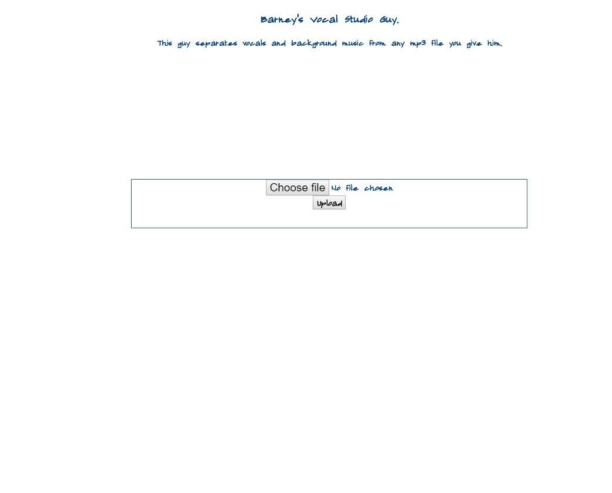

(2019)
This is a platform to separate vocals and bg music from audio files.
This platform was built for the use of aspiring singers who need the voices separated for practice purposes like it is in karaoke.
• Takes audio file as an input from client.
• Decouples the voices using an imported module.
• Returns the zip of two separated audio files back to the client.
• The zip is downloaded on the client.
• Will integrate the payment gateway.
• Can separate the piano sound from the other sounds.
Codebase :
Front-end : ReactJS (hooks)
Back-end : NodeJS + Tenser flow based trained module was imported
 Open in new tab